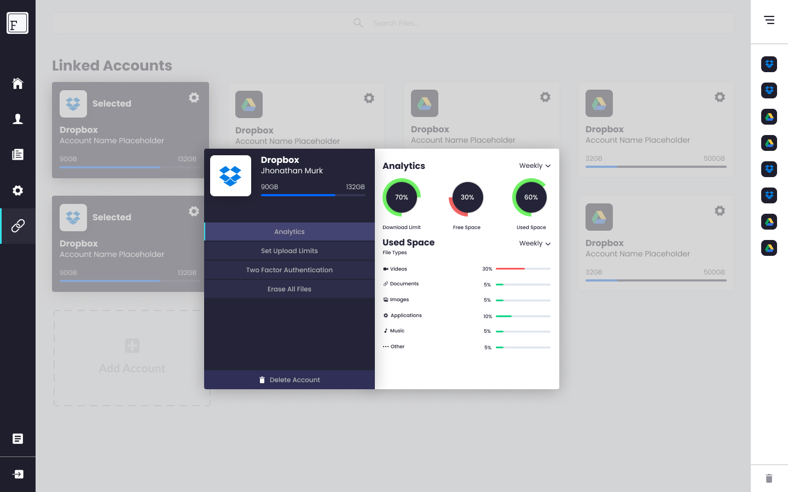

Flex Files
UI/UX Development, Branding & Identity, Marketing

Flex Files is a SASS/Desktop app manager for multiple cloud storage. It's designed so the user can have access to different storage accounts in one place, by connecting his/her accounts to FlexFiles.
Project Summary
The project started as a fun idea and never really made it past the design phase, it was suposed to be a side project that I started off with some friends, but in the end we had too muc other work to do and it eventually got scratched off the board. Never the less, the design turned out great, although there are several functions and pages missing, I decided to showcase it because the design language is really unique and crafty.
Inspiration
This is actually inspired for a dribbble shot I saw a year ago, it was for a platform that I can't really remember but it had a somewhat resembling design and I took the overall feel from that and made something amazing out of it.
Flexability
The idea was to actually have a web based app and a desktop solution, in which case I had to work something out that could easely be crossed over without going through drastic design changes and modifications.
Design Language
I wanted the design language to convay a message of simplicity and have a corporate feel, but at the same time to be really flexible and have the ability to look over the top and futuristic in different places. I think it really does speak for itsef and has a fantastic user experience both for Web and desktop.
Elements and UI
The UI elements are designed to have an ease of use and to be as snappy as possible, while retaining a modern design. There aren't many big elements that take attention away in the whole project.
I also decided to go with rounded edges for a softer feel.
Menu Style
The one thing I'm really proud of is the way that the smart menu system turned out. We were able to design a menu system that can pack a ton of functionality in a super small factor.
The account switcher on the top of the menu switches between cloud storage accounts and changes the explorer on the second menu, which makes it really powerfull and functionall UX wise.
The menu is split into two section with an expanding and contracting methodology for a clutter free viewing experience.
There is also a second expanding side menu for the custom Feeds that shows downloads and uploads, which is on the right side.
Color Selection
I decided to use a simplistic color pallet with some vibrant colors for accents. The selected colors are really good for a corporate feel. The colors are perfect for a minimalistic and futuristic feel if needed, like in the account managment panel, which can be seen below.

Typography
We deicded to use a market standartized font that is well known by a variety of users. Nunito is a well balanced Sans Serif with rounded terminals. Nunito has been designed mainly to be used as a display font but is useable as a text font too. Nunito has been designed to be used freely across the internet by web browsers on desktop computers, laptops and mobile devices.

Branding
One of the areas that we cut down on was general branding. Essentially, branding would be one of the priority things that we would focus on but specifically for this project we decided to go simple and cut down on the design language of the logo and typography. We did this mainly because the project itself is orientated towards functionality rather than aesthetics. With that in mind, we made a simple and clean logo, followed by a similar name text representation that doesn’t catch that much of the user's focus.

Final Thoughts
The end result is a slick SASS and Desktop hybrid app template that looks minimal clean and super user friendly. Sadly this project never made it to development phase so it's staying as a simple concept and design that I can enjoy looking at for inspiration, or porabably repourpose for something even better in the future.
-
Read more
Without resorting to reality, one can, given infinite time and resources, produce all conceivable theories. One of these theories is bound to be the “truth”. To decide among them, scientists conduct experiments and compare their results to predictions yielded by the theories. A theory is falsified when one or more of its predictions fails. No amount of positive results – i.e., outcomes that confirm the theory’s predictions – can “prove right” a theory. Theories can only be proven false by that great arbiter, reality.
-
DeliverablesAgency
- Webdesigner Trends
- The FWA
- Abduzeedo
- Smashing Magazine
- AWWWARDS
Production company- The Webbber
- Computer Arts
- siteInspire
- httpster.net
- It's nice that
VFX & Design- Book of Design
- Illustrator's Home
- Designer's magazine